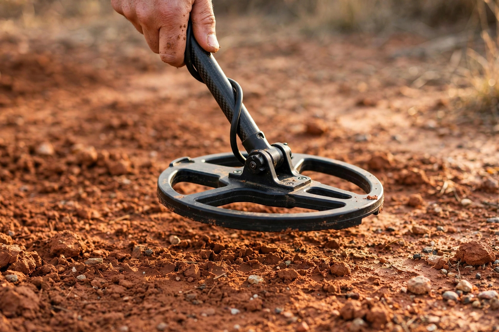

Ground balancing for beginners

Ground balance is the setting beginners either ignore completely or fiddle with nervously, and both habits cost finds. Ignored, it is the most common reason a perfectly good detector chatters at nothing in one field and works fine in another. Fiddled with blindly, it gets confused with sensitivity and discrimination until nothing on the machine is set right. The good news is that the idea underneath it is simple: ground balance tells the detector to ignore the natural minerals in the soil so it can pay attention to actual metal targets. This guide covers what the ground is doing to your signal, which of the four kinds of ground balance your machine has, a step-by-step balancing procedure with a clear success check, and the order to work in when the machine starts making noise for no reason.
What the ground does to your signal
A detector cannot tell the difference between "metal" and "ground" on its own, because the ground is not silent. Soil contains iron particles, natural minerals and mineralized rock, and those materials react to the detector's field in much the same way a buried object does — only spread across tons of dirt instead of one small item. Minelab's guide to detecting in mineralized soils describes the three results: excessive ground noise, where the minerals produce responses of their own; signal distortion, where real target signals get weakened or altered; and reduced detection depth, because mineralized soil absorbs or scatters the signal instead of letting it penetrate. A small ring's signal can simply be drowned by the soil around it.
The mineralization comes in two broad kinds, and a beginner is likely to meet both. Ferrous mineralization is iron-rich ground — red clay, black sand, and soils heavy in iron oxides — which produces strong false signals and a magnetic response that makes the machine unstable. Salt-based mineralization is the non-ferrous kind, found in wet beach sand, tidal flats and alkali soils, where conductive salt disrupts the signal and produces erratic responses. That second kind is why a machine that behaved perfectly in a park can fall apart the first time its coil crosses wet sand at the beach: nothing about the machine changed, but the ground underneath it did.
The four kinds of ground balance, and which one you have
Garrett's ground balance guide divides the feature into four types, and the first job is working out which one is on your machine — because one of the four has nothing for you to adjust at all.
| Type | How it works | Best for | The catch |
|---|---|---|---|
| Preset / fixed | The factory sets one average mineral level; there is no adjustment | Starting out in ordinary parks, yards and fields | Struggles in highly mineralized dirt and salty coastal sand, because it cannot adapt |
| Automatic | The machine samples the ground and sets the balance itself while you pump the coil | Beginners, quick setup, ground that changes often | A good average, but may not be precise enough for heavily mineralized ground |
| Manual | You adjust the setting yourself until the audio response flattens out | Highly mineralized soil, experienced users, precise work | Takes practice, and a setting that is off in either direction costs you |
| Tracking | The machine keeps adjusting continuously as conditions change under the coil | Sites where the soil shifts as you walk — parks, riverbanks, wooded trails | Can give up a little depth compared with a locked manual setting fine-tuned for one spot |
If your entry-level machine is preset — Garrett names its ACE 250 and ACE 300 as examples built around an average mineral setting — then "ground balancing" your detector means knowing its limits, not finding a hidden control. It will handle most parks and fields as designed, and the wet-sand falsing at the beach is a known boundary of the design rather than a fault. Automatic and tracking machines ask only for the pumping routine below, plus occasional re-checks. Manual balance is the only kind that puts the judgement in your hands, and it follows one rule in both directions: set too far one way, the detector becomes overly sensitive to ground minerals and produces false readings; too far the other way, it loses sensitivity and misses targets altogether.
Signs the balance is wrong — and the order to fix them in
An out-of-balance detector announces itself. Garrett's guide lists the warning signs: constant chatter or false signals with no target nearby, target ID numbers that jump around instead of settling on real finds, a noticeable drop in depth, and a machine that goes silent in patches or squeals nonstop. When any of that starts, work in this order — balance first, the other settings second:
- Check the ground balance first. Of the three settings beginners reach for, only ground balance is built to filter mineral interference. If the ground changed — new site, new soil colour, dry field to wet sand — the balance is the prime suspect.
- Then look at sensitivity. Sensitivity controls how strong a signal must be before the detector reacts. Lowering it can quiet a machine, but it does not fix a mineral problem; it just makes everything quieter, targets included.
- Leave discrimination alone. Discrimination controls which metal types the detector accepts or ignores. It has nothing to do with ground noise, and raising it to silence chatter only hides targets — the wrong tool for this job.
The common beginner mistake is doing that list backwards: cranking discrimination, dropping sensitivity, and hunting on with a machine that is still unbalanced — quieter, but blind in exactly the same places.
How to ground balance: the pumping procedure
For automatic and manual machines, the procedure is the "pumping" routine, and it is much the same across brands. Minelab's GPX-4500 manual gives the most precise version of it, and Garrett's general steps match it closely:
- Find a clear patch of ground. It must be free of buried targets and typical of the ground you are about to hunt. Balancing over a hidden target is the classic mistake — the machine will dutifully balance to the target, not the soil.
- Keep the coil parallel to the ground and pump it up and down: lower it as close to the surface as you can without touching, then raise it. The GPX-4500 manual specifies a pump between about 25 mm and 100 mm — one to four inches.
- Let the machine work, or adjust. On an automatic machine, hold the ground balance control as your manual directs and keep pumping while the machine samples the ground. On a manual machine, adjust the setting as you pump.
- Stop when the sound flattens. The success check is audible: when the ground noise stops and the threshold or audio response no longer changes as the coil rises and falls, the detector is balanced. A response that grows louder as the coil drops toward the ground means it is not there yet.
- Re-test over a known target. Swing over a coin you have placed or a target you have already found, and confirm the machine still responds cleanly and at sensible depth before you hunt on.
One failure during pumping is worth knowing in advance. If a persistent signal keeps sounding through the whole routine, the manual's explanation is the likely one: there is probably a target in that patch of ground. Do not fight it — move the coil to a fresh spot and start again.
When to re-balance during a hunt
Balance is set for the ground you balanced on, not for the whole day. Re-check it whenever the ground visibly changes: moving from a dry field onto wet beach sand is the example Garrett gives of a change that demands a re-balance, and the same applies to moving between soil types or returning after rain, when moisture and mineral behaviour have shifted. Tracking machines adjust on their own as you walk, but even they deserve a periodic check rather than blind trust. The check takes seconds, and it is the same one from the manual: stop, raise and lower the coil over the ground — if the threshold stays stable, the balance still holds; if it changes, run the pumping routine again. Coil choice plays a supporting role on difficult ground, too: Minelab notes that Double-D coils produce a more focused field and less ground noise in mineralized soil, and that a smaller coil helps because it analyzes less mineralized soil at once.
What success looks like
Success is unspectacular, which is the point. The machine runs quiet over bare ground — no chatter, no squealing — and speaks up for targets instead of for dirt. Target ID numbers settle within a small range on real finds instead of jumping swing to swing. Depth comes back to what the machine should do, because it is no longer spending its effort fighting the soil. And when conditions change, the first thing checked is the balance, not the discrimination. A balanced detector is not a better detector; it is the same detector finally hearing the ground it was standing on all along.
FAQ
My detector has no ground balance control. Is it broken? No — it almost certainly has preset, factory-fixed ground balance, set to an average mineral level that suits most parks, yards and fields. There is nothing to adjust; the trade-off is that it will struggle in highly mineralized soil and on wet salt sand.
Can I fix chatter by turning the sensitivity down? It will get quieter, but it will not fix the cause. Sensitivity decides how strong a signal must be before the machine reacts; only ground balance filters mineral interference. Balance first, then set sensitivity for the site.
How often should I re-balance? Every time the ground changes character — a new site, a different soil, dry ground to wet sand — and after rain. Between those moments, use the raise-and-lower check: a stable threshold means the balance still holds.
Is tracking ground balance always better than manual? Not always. Tracking is more convenient and suits ground that changes as you walk, but it can sacrifice a little depth compared with a manual setting fine-tuned for one specific spot. Convenience and precision trade against each other here.
Ground conditions, site rules and permissions vary by place. This guide is general information about how the setting works — always check local laws and get permission before detecting on any land.